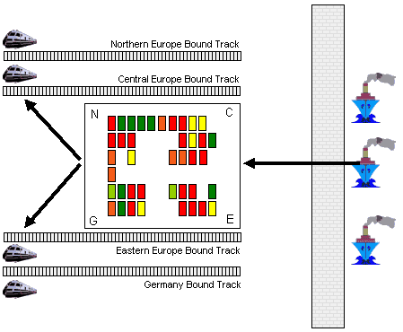

Advanced Modelling Features
Bin
Model Description
This model simulates the rail terminal of a huge container terminal in Hamburg where containers are loaded onto trains to be transported to the hinterland. We will consider a very simplified version of this process to keep the model clear and concise. Container ships arrive at the harbour and deliver containers to the rail terminal. There they are loaded onto trains that leave for four different destinations:
- Northern Europe
- Central Europe
- Eastern Europe
- Germany
Each destination is allocated a storage area (bin). Trains only load containers from the storage area that is associated with their destination whereas ships deliver containers to all storage areas.
When a train is completely loaded, it immediately leaves for its destination and is replaced by another train.
